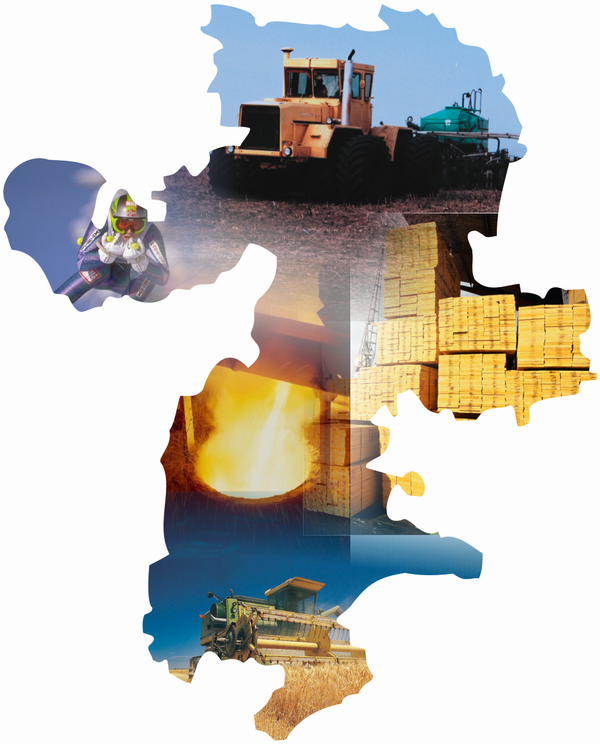

Всем привет! По данным ссылкам вы можете наглядно посмотреть статистику по административным единицам Челябинской области
Данное задание было выполнено Тимофеем Яковцом в рамках курсовой работы ЧелГУ
* Численность населения (2021) карта
* Численность населения (2021) график
* Прирост населения (2002-2021) карта
* Прирост населения (2002-2021) график
* Прирост населения в процентах (2002-2021) карта
* Прирост населения в процентах (2002-2021) график
* Доходы муниципальных образований (2021)
* Доходы муниципальных образований, рублей на человека (2021)
* Дефицит (профицит) бюджетов муниципальных образований (2021)
* Образовательные организации (2021)
* Музеи и галереи (2021)
Здесь можно скачать карты для самостоятельного создания инфографики
Здесь можно самостоятельно создавать инфографику (карты, графики, таблицы)

Репозиторий